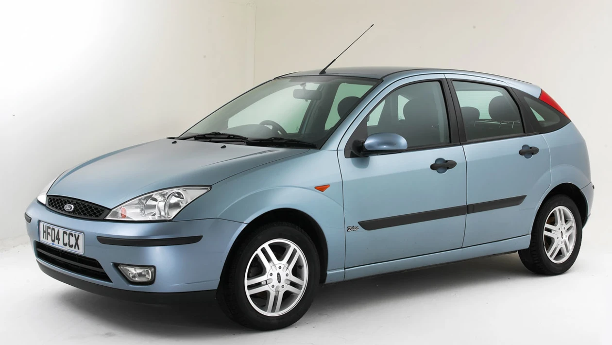

Ford Focus první generace je kompaktní auto vyráběné od roku 1998. Je známý především velmi dobrými jízdními vlastnostmi a pohodlným podvozkem. Díky tomu patří mezi nejlepší auta na řízení ve své třídě.
Focus je ideální pro řidiče, kteří chtějí zábavnější jízdu. Oproti konkurenci lépe drží v zatáčkách, ale může mít vyšší náklady na opravy podvozku.